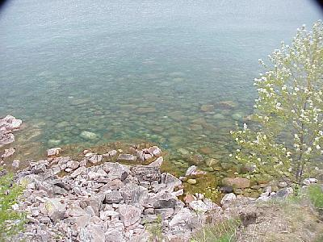
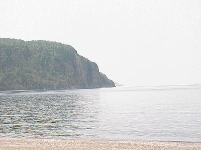
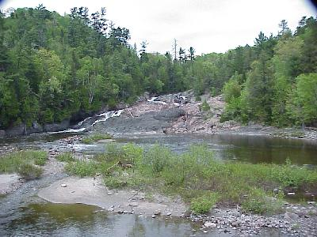
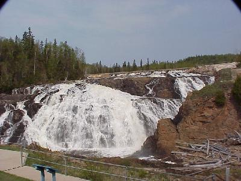

May 16, 728 miles
| Onward to the city - Thunder Bay. We left Pancake Campgrounds at 7:30 AM and proceeded along the northern shore of Lake Superior to Thunder Bay. At the various stops we noticed that the water was very clear, as it appears here at Agawa Bay. |  |
| There were numerous opportunites to pull over and look at the beautiful sights along the lake. Far too many to post pictures of them all. But this one is Old Woman Bay was especially nice. |  |
| We also had the opportunity to stop by and see a number of waterfalls. One just off Route 17 is Chippewa Falls. |  |
| Another is High Falls. Many of these waterfalls have been used to generate electricity, and the generators are still in service today. The volume of water going over these falls would be many times greater if the full run of the river were allowed to flow over them. |  |
| We pulled into camp, in Thunder Bay, at
about 7:00 PM, after traveling 456 miles. Other highlights from the day included seeing two moose, but sorry, we were not fast enough on the draw with the camera to get any pictures! |
|